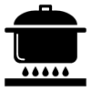

Descripció ternera.
Dificultad: alta Cocina: tradicional Vegetariana: sí Celíacos: no Anticáncer: no

La pasta és un dels pilars bàsics en l’alimentació d’un esportista. Gràcies al seu alt valor nutricional aporta molts carbohidrats de baix índex glucèmic. Ideal per a realitzar un esforç prolongat i no quedar-se sense energia.
Descripció ternera.
Dificultad: alta Cocina: tradicional Vegetariana: sí Celíacos: no Anticáncer: no

Descripció amaretti.
Dificultad: baja Cocina: horno Vegetariana: no Celíacos: no Anticáncer: no


Descripció arroz.
Dificultad: alta Cocina: tradicional Vegetariana: sí Celíacos: no Anticáncer: no

Descripció ternera.
Dificultad: alta Cocina: tradicional Vegetariana: no Celíacos: no Anticáncer: no
Descripció arroz con leche.
Dificultad: baja Cocina: tradicional Vegetariana: no Celíacos: no Anticáncer: no